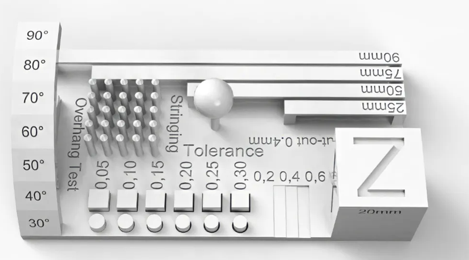

Tipy & triky
Kalibrační výtisky, užitečné zdroje, komunity a triky které vám ušetří hodiny ladění.
Kalibrační výtisky
Kalibrační výtisky jsou standardní testovací modely, které vám odhalí co je špatně nastaveno dříve, než zkazíte hodiny tisku na reálném projektu. Tiskněte je vždy po změně filamentu, trysky nebo nastavení teploty.
XYZ Cube
Jednoduchá 20×20×20 mm kostka s písmeny X, Y, Z na každé straně. Tiskne se rychle (~20 min) a okamžitě ukáže, zda jsou vaše nastavení na správné cestě.
↗ Hledat XYZ Calibration Cube: MakerOnline · MakerWorld · Printables
Temperature Tower
Věž s různými teplotními zónami (typicky 190–230 °C pro PLA, každá zóna o 5 °C méně). V jednom tisku otestuje celé teplotní spektrum a ukáže kde je povrch nejhezčí.
↗ Hledat Temperature Tower: MakerOnline · MakerWorld · Printables
Retraction Tower
Podobně jako Temperature Tower — věž testuje různé hodnoty retrakce v jednom tisku. Ideální pro nalezení sweet spotu bez ucpání extrudéru ani nadměrného stringuingu.
↗ Hledat Retraction Tower: MakerOnline · MakerWorld · Printables
Bed Level Test
Sada tenkých plošek (nebo čar) rozmístěných po celé ploše podložky. Umožňuje vizuálně zkontrolovat, zda je mesh leveling správně nastaven v každém rohu i středu.
↗ Hledat Bed Level Test: MakerOnline · MakerWorld · Printables
Overhang Test
Model s postupně se zvyšujícím úhlem převisu — obvykle 10° až 80° ve stupních po 10°. Ukáže přesně od jakého úhlu vaše tiskárna (a nastavení chlazení) potřebuje podpory.
↗ Hledat Overhang Test: MakerOnline · MakerWorld · Printables
Stringing Test
Klasický model dvou věžiček mezi kterými tiskárna cestuje — veškeré stringing vlákna jsou ihned viditelné. Ideální pro finální doladění po Temperature a Retraction Tower.
↗ Hledat Stringing Test: MakerOnline · MakerWorld · Printables
Flow Calibration Cube
Dutý čtverec s tloušťkou stěny přesně 1 nebo 2 trysky. Změřte posuvným měřítkem skutečnou tloušťku stěny a podle odchylky upravte Flow Rate % v sliceru. Základní kalibrace pro každý nový filament.
↗ Hledat Flow Calibration Cube: MakerOnline · MakerWorld · Printables
Speed Tower
Věž testující různé rychlosti tisku — od pomalé po rychlou. Ukáže kde se začínají objevovat artefakty (ghosting, nedotisk rohů, stringing) a kde je vaše reálné maximum kvality.
↗ Hledat Speed Tower: MakerOnline · MakerWorld · Printables
Bridging Test
Model s vodorovnými mosty různé délky (obvykle 10–50 mm) nataženými mezi dvěma sloupky. Ukáže, jak dlouhý most vytisknete bez podpěr (supports).
↗ Hledat Bridging Test: MakerOnline · MakerWorld · Printables
Tolerance Test
Kolíčky nebo kroužky v otvorech s postupně větší vůlí (např. 0,1–0,5 mm), tištěné najednou. Zjistíte, jakou mezeru potřebujete u skládaných dílů a u modelů tištěných rovnou složených (print-in-place).
↗ Hledat Tolerance Test: MakerOnline · MakerWorld · Printables
Pressure Advance Test
Při zrychlení a zpomalení tryska nestíhá měnit tlak plastu — v rozích vznikají boule a na začátcích čar mezery. OrcaSlicer má test přímo v menu Kalibrace (Calibration → Pressure Advance) a vytiskne čáry nebo věž s různými hodnotami.
↗ Hledat Pressure Advance Test: MakerOnline · MakerWorld · Printables
3DBenchy
Známá lodička, kterou tiskaři po celém světě používají jako srovnávací test. Na jednom malém modelu jsou převisy, mosty, kruhové otvory, drobné nápisy i šikmé plochy.
↗ Hledat 3DBenchy: MakerOnline · MakerWorld · Printables
Support Test
Model s převisy a plochami, pod které slicer vytvoří podpěry. Ukáže, jak se podpěry tisknou a jak snadno se po tisku oddělí od modelu.
↗ Hledat Support Test: MakerOnline · MakerWorld · Printables
Ironing Test
Plochý model s několika poli, na kterých se mění nastavení žehlení. Při žehlení tryska po dokončení horní vrstvy přejede plochu ještě jednou s velmi malým průtokem a uhladí ji.
↗ Hledat Ironing Test: MakerOnline · MakerWorld · Printables
A další testy — např. Cooling Test, Ringing Tower, Max Volumetric Speed, Cornering Test, Hole Test
Kromě výtisků na této stránce najdete testy chlazení (cooling), zvlnění za rohy (ringing, ghosting), maximálního průtoku trysky (max volumetric speed), ostrosti rohů (cornering), přesnosti kruhových otvorů (hole) a mnoho dalších. Vybírejte podle toho, co právě ladíte.
↗ Hledat „3D test“: MakerOnline · MakerWorld · Printables

Triky pro lepší výtisky
Drobné změny v nastavení nebo workflow, které mají velký vliv na výsledek. Každý z těchto tipů vychází z praxe a běžných chyb začátečníků.
První vrstva pomaleji
Nastavte rychlost první vrstvy na 30–40 % normální rychlosti. Pomalejší první vrstva lépe přilne k podložce a kompenzuje drobné nepřesnosti nivelace.
Vyšší teplota první vrstvy
Zvyšte teplotu trysky o +5 °C pro první vrstvu oproti zbytku tisku. Roztavenější plast lépe zatéká do textury podložky a přilnutí je výrazně lepší.
IPA před každým tiskem
Odmastěte tiskovou podložku izopropylalkoholem před každým tiskem — i pokud vypadá čistě. Mastné otisky prstů jsou nejčastější příčina špatné přilnavosti první vrstvy.
Brim pro vysoké tenké modely
Zapněte Brim (okraj) pro modely s malou kontaktní plochou — vysoké figurky, tenké stojany, objekty s ostrými dolními hranami. Brim 5–8 mm výrazně zabrání warpingu.
Tree supports vždy lepší
Tree Supports (organické stromečkové podpory) jsou téměř vždy lepší než normální mřížkové. Jsou snazší na odstranění, zanechávají menší jizvy a používají méně filamentu.
Seam „Rear" pro estetiku
Nastavte umístění seam (spoj vrstev) na „Rear" (zadní strana). Švový artefakt se skryje na nejméně viditelné straně modelu — zejména u figurek a dekorativních předmětů.
Vypnout větrák pro první vrstvy
Nastavte part cooling ventilátor na 0 % pro první 2–3 vrstvy. Pomalejší chladnutí první vrstvy zlepší přilnavost k podložce — zejména pro ABS, ASA a Nylon.
Více malých objektů najednou
Tiskněte několik malých objektů současně. Každý objekt má více času vychladnout před dalším layerem — výsledek je čistší než při tisku jednoho kusu (zejména pro malé detailní modely).
Ironing pro hladký vršek
Ironing (žehlení) přejede hotend po poslední vrstvě bez extruze a uhladí ji. Výsledek je lesklý, téměř hladký povrch na vrchní straně modelu bez dalšího post-processingu.
Gyroid infill pro pevnost
Gyroid infill je trojrozměrná struktura která poskytuje stejnoměrnou pevnost ve všech směrech a rychle se tiskne. Lepší volba než cubic nebo honeycomb pro díly pod mechanickým namáháním.
Horizontální rozšíření otvorů
FDM tisk mírně zmenšuje otvory a díry. Nastavte Hole Horizontal Expansion (rozšíření otvorů) na +0,1 až +0,2 mm pro díly kde potřebujete přesné šroubové otvory nebo lícování.
Pause pro vložení magnetu/matky
Přidejte do G-kódu „Pause at Height" v místě kde chcete vložit magnet nebo matku. Tiskárna se zastaví, vy vložíte komponent, a tisk pokračuje — perfektně zakomponovaný hardware.
Live Adjust Z za tisku
Kobra X umožňuje upravit Z-offset přímo za tisku první vrstvy. Spusťte tisk, sledujte první vrstvu a točte kolečkem nebo klepejte na displeji +/− dokud první vrstva nevypadá správně. Změna se uloží automaticky.
Tisk z telefonu přes Anycubic app
Kobra X se připojí na Wi-Fi a přes aplikaci Anycubic (iOS/Android) lze spouštět tisky, sledovat kameru, upravovat Z-offset a zastavit tisk — vše vzdáleně z telefonu. Nastavte v menu: Nastavení → Wi-Fi.
Komunity a kde hledat pomoc
3D tisk má jednu z nejpřátelštějších a nejochotnějších online komunit. Ať se stane cokoliv — ktokoliv tuhle chybu udělal před vámi a řešení existuje. Stačí se zeptat.
r/3Dprinting
Největší anglická komunita 3D tisku. Přes 3 miliony členů, denně stovky dotazů a odpovědí. Ideální pro obecné problémy, inspiraci a showcase výtisků.
Redditr/AnycubicKobra
Subreddit specificky pro Anycubic Kobra tiskárny. Problémy specifické pro Kobru X, zkušenosti uživatelů, firmware updaty a hardware tipy přímo pro vaší tiskárnu.
Facebook3D tisk CZ/SK
Česká a slovenská Facebook komunita 3D tiskařů. Přátelská atmosféra, rychlé odpovědi v češtině. Vhodné pro začátečníky kteří preferují komunikaci v rodném jazyce.
DiscordPrintables Discord
Oficiální Discord server Printables (Prusa). Živý chat, speciální kanály pro různé tiskárny a materiály, help kanál pro rychlé dotazy. Aktivní komunita 24/7.
ForumPrintables Forum
Strukturované fórum s CZ/SK sekcí. Hledání archivovaných odpovědí je zde jednodušší než na Redditu — mnoho problémů bylo dávno vyřešeno, stačí vyhledat.
PodporaAnycubic Support
Oficiální podpora výrobce. Dokumentace, FAQ, firmware ke stažení a ticketový systém pro reklamace a záruční opravy. První zastávka při hardwarovém problému s tiskárnou.
Doporučené YouTube kanály
Video vysvětlení jsou pro 3D tisk výrazně lepší než text — vidíte přesně jak nastavení vypadá v praxi. Tyto kanály patří k nejkvalitnějším zdrojům ve světě 3D tisku.
Teaching Tech
Nejlepší anglický vzdělávací kanál pro 3D tisk. Systematická kalibrace krok za krokem, vědecké testy a srozumitelné vysvětlení každého parametru. Začněte jeho kalibrační sérii.
CNC Kitchen
Vědecké testy pevnosti různých nastavení, filamentů a infill vzorů. Stefan doslova testuje výtisky na trhacích strojích. Ideální pokud tisknete funkční díly a chcete vědět proč.
Anycubic Official
Oficiální kanál výrobce. Návody na sestavení, kalibraci a základní obsluhu Kobra tiskáren. Výchozí bod pro nové majitele Kobry X — první kroky a setup.
3D tisk návod CZ
Česky mluvící kanály pro 3D tisk. Hledejte „3D tisk návod CZ" nebo „3D tiskárna CZ" — komunita roste a česky vysvětlený obsah šetří čas při pochopení složitějších konceptů.
Maker's Muse
Design pro 3D tisk, post-processing, materiály a kreativní projekty. Angus se zaměřuje na to jak navrhovat modely s ohledem na tiskové omezení. Skvělý pro přechod od tisku k tvorbě.
Prusa3D
Přestože jde o kanál výrobce Prusa, valná část obsahu je obecně platná pro všechny FDM tiskárny. Výborné návody na OrcaSlicer/PrusaSlicer funkce a materiálové tipy.
Užitečné online nástroje
Weby a nástroje které vám ušetří čas při diagnostice problémů, výběru materiálů nebo ladění nastavení.
Teaching Tech Calibration Site
Interaktivní kalibrační průvodce přímo v prohlížeči — generuje G-kódy pro Temperature Tower, Retraction Tower a další kalibrační výtisky přesně pro vaše parametry tiskárny. Nejlepší nástroj pro systematickou kalibraci.
CNC Kitchen — materiálové testy
Databáze vědeckých testů pevnosti filamentů, infill vzorů a nastavení tisku. Pokud se rozhodujete mezi materiály pro funkční díl, zde najdete reálná data z trhacích zkoušek.
3D Print Troubleshooting Chart
Vizuální průvodce problematikou 3D tisku — fotky běžných problémů s popisem příčin a řešení. Rychlá diagnostika: uvidíte problém na výtisku, najdete stejnou fotku a hned víte co nastavit.
MakerOnline — repozitář modelů
Komunita přímo od Anycubic. Modely jsou testovány na tiskárnách Anycubic — včetně Kobry X. Tiskové parametry jsou pro váš stroj již přednastaveny. Menší databáze než ostatní, ale relevantní obsah.
MakerWorld — repozitář modelů
Nejrychleji rostoucí platforma momentálně. Moderní UI, výborné filtrování, systém odměn pro autory (body za stažení). Hodně kvalitních modelů s detailními tisk. parametry. Bezplatná registrace.
Printables.com — repozitář modelů
Největší repozitář 3D modelů od Prusa Research. Všechny modely zdarma, kategorizované, s hodnoceními a tipy od komunity. Nejen modely — najdete zde i remixovatelné kalibrační výtisky a náhradní díly pro Kobru.
3D Printing Glossary
Slovník termínů 3D tisku v angličtině. Když narazíte na neznámý výraz v anglickém návodu nebo komunitě — zde najdete definici. Rychlá záchrana při čtení anglické dokumentace.
OrcaSlicer Dokumentace
Oficiální dokumentace OrcaSliceru. Popis každého parametru, kalibrační funkce (PA, Flow, Max volumetric speed) a návody na nastavení specifická pro různé tiskárny. Neocenitelné pro pokročilé nastavení.
Profil Kobry X v OrcaSliceru
OrcaSlicer má vestavěnou databázi tiskáren — Kobra X tam je, ale komunitní profily jsou často přesnější a lépe naladěné. Zde je přehled jak profil získat, ověřit a co zkontrolovat.
Klíčová nastavení profilu pro Kobru X
Rozměry tiskové plochy
Ověřte správné rozměry: X=400, Y=400, Z=450 mm. Střed podložky musí odpovídat — nesprávné hodnoty způsobí tisk mimo plochu nebo G-kód mimo rozsah.
Purge line a homing
Zkontrolujte Start G-kód — musí obsahovat G28 (homing), G29 (auto-leveling) a purge line na okraji podložky. Bez G29 se mesh leveling neprovede a první vrstva nebude rovná.
Retrakce Direct Drive
Kobra X má přímý náhon (Direct Drive) — retrakce má být 0,5–2 mm (ne 4–7 mm jako Bowden). Výchozí profil v OrcaSliceru může mít nesprávnou hodnotu — vždy ověřte před tiskem.
Limity Kobry X
Nastavte správné limity: Hotend max. 260 °C, Heatbed max. 100 °C. OrcaSlicer vás varuje pokud profil přesáhne limity — zabrání poškození hardwaru nesprávným G-kódem.
Resonance Compensation
Kobra X má vestavěný Input Shaping v firmware. V OrcaSliceru nenastavujte vlastní hodnoty akcelerace — tiskárna ji řídí sama. Nechte Acceleration na hodnotách z výchozího profilu.
GitHub, MakerOnline, MakerWorld a Printables
Komunitní profily jsou často lépe naladěné než výchozí. Hledejte „Anycubic Kobra X OrcaSlicer profile" na GitHubu, MakerOnline, MakerWorld nebo Printables — stáhněte .json a importujte přes File → Import Config.